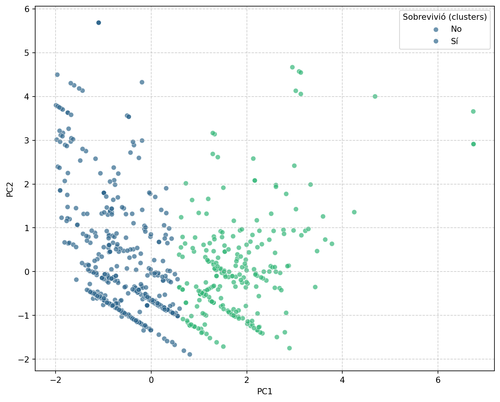
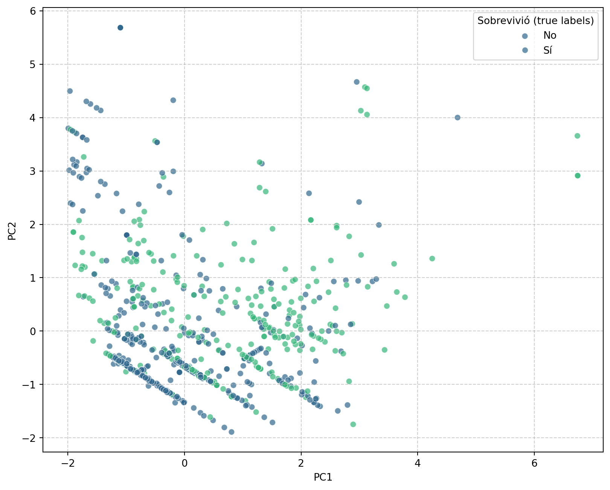
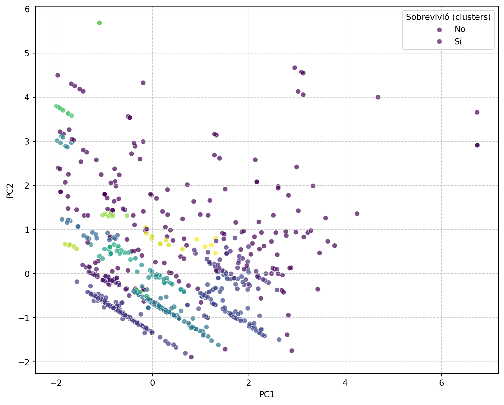

from IPython.display import Markdown, display
import pandas as pd
import seaborn as sns
import matplotlib.pyplot as plt
from sklearn.preprocessing import StandardScaler
from sklearn.cluster import KMeans
from sklearn.metrics import silhouette_score, adjusted_rand_score
import warnings
df_titanic = sns.load_dataset('titanic')
features = ['pclass', 'age', 'sibsp', 'parch', 'fare']
df_kmeans = df_titanic[features].copy()
true_labels = df_titanic['survived'] # Estas son nuestras "etiquetas verdaderas" para el ARI
df_kmeans['age'].fillna(df_kmeans['age'].median(), inplace=True) # imputación de datos (recordar secciones previas)Los algoritmos de clustering (o agrupamiento) son una clase fundamental de técnicas de aprendizaje no supervisado en el campo del Machine Learning y la Ciencia de Datos. Su propósito principal es organizar un conjunto de datos en grupos de manera que los elementos dentro de un mismo grupo sean más similares entre sí que con respecto a los elementos de otros grupos.
¿Para qué sirven?
Los algoritmos de clustering son herramientas poderosas para descubrir patrones y para estructurar datos sin etiquetas. Algunas de sus aplicaciones posibles:
- Análisis exploratorio de datos (EDA).
- Detección de valores atípicos (outliers).
- Organización y resumen de información.
- Compresión de datos.
Medidas de la calidad de agrupamiento
Existen muchas medidas de desempeño para clustering, solo en la versión estable de sklearn se listan 9 https://scikit-learn.org/stable/modules/clustering.html#clustering-performance-evaluation. Cada una de ellas se ajusta a las diferentes necesidades del problema. En este curso nos enfocaremos en dos:
- El coeficiente de silueta es una medida interna, lo que significa que no requiere conocer las etiquetas verdaderas de los datos, sino que se basa únicamente en la estructura inherente de los clústeres formados por el algoritmo. Mide qué tan similar es un objeto (punto de datos) a su propio clúster en comparación con otros clústeres. Para cada punto de datos, calcula una puntuación que indica la cohesión del punto dentro de su clúster y la separación de ese punto con respecto a los clústeres vecinos. El coeficiente de silueta global para todo el agrupamiento es el promedio de los coeficientes de silueta de todos los puntos de datos del conjunto. Ver Wikimedia Foundation, Inc. (s. f.c) para más detalles.
- Varia entre -1 y 1
- Un coeficiente de silueta cercano a 1 sugiere que los clustering es denso y bien separado.
- Un coeficiente de silueta cercano a -1 sugiere que los grupos están superpuestos, son muy densos o que la asignación no es buena.
- En el paquete
sklearnlo podemos encontrar ensklearn.metricsfunción silhouette_score.
- El Índice de rand ajustado (Adjusted Rand Index - ARI) es una métrica que requiere las etiquetas de clase verdaderas o de referencia (ground truth). El ARI cuantifica el grado de concordancia entre las etiquetas de clúster generadas por un algoritmo de agrupamiento y las etiquetas de clase preexistentes de los datos. Ver Wikimedia Foundation, Inc. (s. f.a) para más detalles.
- Varia entre 0 y 1.
- Valores cercanos a 0 van por una distribución aleatoria entre las partición predicha y la verdadera.
- Valores cercanos a 1 van indican la concordancia entre las partición predicha y la verdadera.
- En el paquete
sklearnlo podemos encontrar ensklearn.metricsfunciónadjusted_rand_score.
El problema de agrupamiento
Los algoritmos de clustering buscan una partición \(C = \{C_1, C_2, ..., C_k\}\) de un conjunto de datos \(X = \{x_1, x_2, ..., x_n\}\), donde \(x_i \in \mathbb{R}^d\), tal que los puntos dentro de cada clúster \(C_j\) son similares y los puntos de diferentes clústeres son disímiles. La noción de similitud se define mediante una métrica de distancia (e.g., Euclidiana, Manhattan, Mahalanobis) o una función de similitud (e.g., similitud coseno). Algunos ejemplos prototipicos son los siguientes:
- K-Means: Intenta dividir los datos en un número \(k\) predefinido de clústeres, asignando cada punto al centroide del clúster más cercano.
- DBSCAN (Density-Based Spatial Clustering of Applications with Noise): Agrupa puntos que están densamente conectados, siendo muy bueno para encontrar clústeres de formas arbitrarias y detectar ruido.
El resto del documento describe algunos algoritmos de clustering y se prueban de manera práctica.
K-Means (y variantes)
Es un algoritmo de clustering que busca particionar la base de datos y minimizar la suma de cuadrados de las distancias entre cada punto y el centroide de su clúster asignado. Asume grupos de forma esférica y tamaño similar.
Basado en el algoritmo de Expectation-Maximization - EM o, algoritmo de Lloyd Wikimedia Foundation, Inc. (s. f.b):
- Inicialización: Se seleccionan \(k\) centroides iniciales aleatoriamente de los puntos de datos o mediante estrategias más sofisticadas, e.g., K-Means++ o k-centers.
- Asignación a centroides cercanos (expectation): Cada punto de datos \(x_i\) se asigna al clúster cuyo centroide \(\mu_j\) es el más cercano, según la métrica de distancia seleccionada (comúnmente Euclidiana). La asignación se basa en la función de costo: \[J = \sum_{j=1}^{k} \sum_{x_i \in C_j} \|x_i - \mu_j\|^2\]
- Actualización de centros (maximization): Los centroides de cada clúster se recalculan como la media de todos los puntos asignados a ese clúster: \[\mu_j = \frac{1}{|C_j|} \sum_{x_i \in C_j} x_i\]
- Convergencia: Los pasos 2 y 3 se repiten iterativamente hasta que la asignación de clústeres ya no cambia, la suma de cuadrados de las distancias se minimiza, o se alcanza un número máximo de iteraciones.
Es rápido y escalable para grandes datasets, fácil de implementar y entender. Sin embargo, se debe tener en cuenta que es sensible a la inicialización de los centroides, requiere que \(k\) sea preespecificado, no maneja bien clústeres de formas no esféricas o densidades variables, y es sensible a outliers.
Ejemplo:
K-means es sensible a la escala, por lo que nos aseguramos de normalizar
scaler = StandardScaler()
scaled_features = scaler.fit_transform(df_kmeans)Ahora, aplicamos K-Means con 2 clusters
n_clusters = 2
kmeans = KMeans(n_clusters=n_clusters, random_state=42, n_init=10)
kmeans.fit(scaled_features)
cluster_labels = kmeans.labels_ # Etiquetas de clúster generadas por K-MeansAhora calculamos las medidas de desempeño
sil = silhouette_score(scaled_features, cluster_labels)
ari_score = adjusted_rand_score(true_labels, cluster_labels)
Markdown(f"""
Particiones: {pd.Series(cluster_labels).value_counts().tolist()}
| nombre | valor |
|---------|---------|
| coeficiente de silueta | {sil:.3f} |
| adjusted rand index | {ari_score:.3f} |
""")Particiones: [643, 248]
| nombre | valor |
|---|---|
| coeficiente de silueta | 0.376 |
| adjusted rand index | 0.102 |
Visualización
from sklearn.decomposition import PCA
principal_components = PCA(n_components=2).fit_transform(scaled_features)
df_pca = pd.DataFrame(data=principal_components, columns=['PC1', 'PC2'])
# Añadir la columna de supervivencia para la visualización
df_pca['survived'] = df_titanic['survived']
df_pca['cluster_labels'] = cluster_labelsplt.figure(figsize=(10, 8))
sns.scatterplot(
data=df_pca,
x='PC1',
y='PC2',
hue='cluster_labels',
palette='viridis', # Esquema de colores
alpha=0.7 # Transparencia
)
plt.legend(title='Sobrevivió (clusters)', labels=['No', 'Sí'])
plt.grid(True, linestyle='--', alpha=0.6)
plt.show()

Comparando con las etiquetas reales
plt.figure(figsize=(10, 8))
sns.scatterplot(
data=df_pca,
x='PC1',
y='PC2',
hue='survived',
palette='viridis', # Esquema de colores
alpha=0.7 # Transparencia
)
plt.legend(title='Sobrevivió (true labels)', labels=['No', 'Sí'])
plt.grid(True, linestyle='--', alpha=0.6)
plt.show()
Actividades
- Replicar el ejercicio cambiando a la base de datos de
digitsy visualización con UMAP. - ¿Qué pasaría en diferentes valores de \(k\) (
n_clusters)?
DBSCAN (Density-Based Spatial Clustering of Applications with Noise)
Identifica clústeres como regiones densas de puntos en el espacio de datos, separadas por regiones de menor densidad. Es capaz de descubrir clústeres de formas arbitrarias y es robusto al ruido (outliers).
Se requieren una serie de hiperpárametros y conceptos para su explicación. Sea \(\epsilon\) el radio máximo para considerar dos puntos como vecinos. MinPts el número mínimo de puntos requeridos para formar una región densa.
- Se selecciona un punto de datos aleatorio que no ha sido visitado.
- Se recuperan todos sus vecinos dentro de \(\epsilon\).
- Si el número de vecinos es menor que MinPts, el punto se etiqueta como ruido (potencialmente, hasta que un punto central lo alcance).
- Si el número de vecinos es mayor o igual a MinPts, el punto es un punto central y se inicia un nuevo clúster. Todos sus vecinos dentro de \(\epsilon\) se añaden al clúster (si no están ya asignados a otro clúster o marcados como ruido).
- Para cada nuevo punto añadido al clúster (especialmente si es un punto central), el proceso de expansión continúa recursivamente. Los puntos fronterizos se incluyen en el clúster pero no expanden el clúster por sí mismos.
- El proceso se repite hasta que todos los puntos han sido visitados.
No requiere especificar \(k\), descubre clústeres de formas arbitrarias, robusto a outliers (los etiqueta como ruido). Es sensible a los parámetros \(\epsilon\) y MinPts (que pueden ser difíciles de elegir, especialmente en datos de alta dimensión), no maneja bien clústeres con densidades muy diferentes. Hay otros algoritmos más modernos como HDBSCAN que pueden ser más robustos a estos problemas.
from IPython.display import Markdown, display
import pandas as pd
import seaborn as sns
import matplotlib.pyplot as plt
from sklearn.preprocessing import StandardScaler
from sklearn.cluster import DBSCAN
from sklearn.metrics import silhouette_score, adjusted_rand_score
import warnings
df_titanic = sns.load_dataset('titanic')
features = ['pclass', 'age', 'sibsp', 'parch', 'fare']
df = df_titanic[features].copy()
true_labels = df_titanic['survived'] # Estas son nuestras "etiquetas verdaderas" para el ARI
df['age'].fillna(df['age'].median(), inplace=True) # imputación de datos (recordar secciones previas)DBSCAN se basa en distancia, que por lo que también nos aseguramos de normalizar para que ninguna componente sea más pesada que otra:
scaler = StandardScaler()
scaled_features = scaler.fit_transform(df)Ejecutamos
eps = 0.5
min_samples = 5
dbscan = DBSCAN(eps=eps, min_samples=min_samples)
dbscan.fit(scaled_features)
cluster_labels = dbscan.labels_ Ahora calculamos las medidas de desempeño
sil = silhouette_score(scaled_features, cluster_labels)
ari_score = adjusted_rand_score(true_labels, cluster_labels)
Markdown(f"""
Particiones: {pd.Series(cluster_labels).value_counts().tolist()}
| nombre | valor |
|---------|---------|
| coeficiente de silueta | {sil:.3f} |
| adjusted rand index | {ari_score:.3f} |
""")Particiones: [316, 176, 101, 89, 45, 45, 25, 13, 12, 9, 8, 8, 7, 7, 7, 7, 6, 5, 5]
| nombre | valor |
|---|---|
| coeficiente de silueta | 0.230 |
| adjusted rand index | 0.069 |
Visualización
plt.figure(figsize=(10, 8))
sns.scatterplot(
data=df_pca,
x='PC1',
y='PC2',
hue='cluster_labels',
palette='viridis', # Esquema de colores
alpha=0.7 # Transparencia
)
plt.legend(title='Sobrevivió (clusters)', labels=['No', 'Sí'])
plt.grid(True, linestyle='--', alpha=0.6)
plt.show()

Actividades
- Replicar el ejercicio pero trabajando sobre
digitsy ejecutando DBSCAN sobre una proyección 2D de UMAP. - Aplica DBSCAN para diferentes valores de
epsymin_sample; explica como deberías escoger los valores correctos para un conjunto de datos.
Referencias
Wikimedia Foundation, Inc. s. f.a. «Adjusted Rand index». https://en.wikipedia.org/wiki/Rand_index#Adjusted_Rand_index.
———. s. f.b. «Algoritmo de Lloyd». https://en.wikipedia.org/wiki/Lloyd%27s_algorithm.
———. s. f.c. «Coeficiente de silueta». https://es.wikipedia.org/wiki/Silhouette_(clustering).